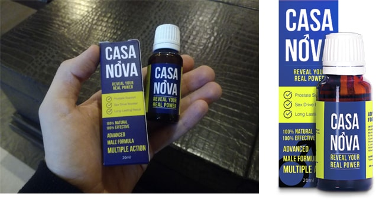
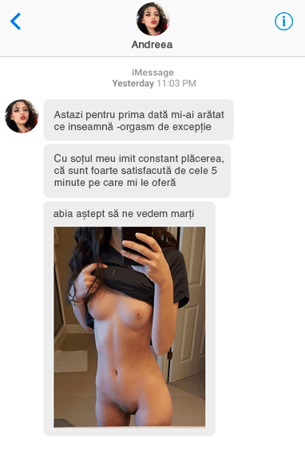

Alegerea editorului
Legendele puterii masculine indestructibile a bărbaților arabi au zburat în întreaga lume
Toată lumea vrea să afle cum reușesc să satisfacă zeci de femei intr-o singură noapte. Citiți această poveste și aflați ce le permite șeicilor să fie mereu in formă.
Poligamia este ceva firesc în viața bărbaților arabi. Poți fi un șeic sau un simplu funcționar public, dar vei avea cel puțin două soții. Este simplu: cu cât este mai bogat omul, cu atât are mai multe soții. Și "are" - nu numai în sensul social, ci și în cel fizic.
Șeicii satisfac toată noaptea un harem intreg.
Este dificil? E placut!
Aproape pentru toți bărbații arabi, sexul este sensul vieții. Încă din adolescență ei visează să facă sex cu mai multe partenere și doresc să-și îndeplinească toate fanteziile erotice.
Visele sunt vise, dar cum le reușește?
Unii susțin că o cauză ar fi faptul că arabii au interdicție la alcool și la tutun. Aceasta este o prostie - toată lumea bea și fumează. Secretul real a fost destăinuit anonim de o fată care a fugit dintr-un harem. Potrivit acesteia, fostul ei soț, magnatul petrolier Adnan Khashoggi, a luat ce are la bază extractul din ciuperca Phallus Impudicus și a altor afrodiziace naturale pentru a crește potența.
Dacă citiți forumurile barbatilor arabi, este cel mai popular și discutat produs. Este recomandat de marea majoritate a urologilor.
"Acest preparat este util tocmai pentru efectul sinergic al componentelor sale, chiar și cursul de bază al consumului preparatului va îmbunătăți în mod serios potența, va adăuga rezistență și va elibera energia stocată în fiecare om."
Abdulqadir Ismail Moh’d Abdullah Al-Zarooni,
președinte, Emirates Urological Society (EUS)
a interesat experții datorita celor 3 proprietăți utile.
1) Rezistență
2) Oferă rapid energie și elimină sentimentul de oboseală.
3) Conține doar ingrediente naturale. Preparatul dezvoltă energia naturală a organismului, dar fără efecte negative.
Este interesant faptul că multe componente din au fost folosite de mii de ani în medicina populară pentru a crește potența.
- Ciuperca Phallus Impudicus a fost un remediu universal pentru restabilirea funcției sexuale la locuitorii antici din Europa de Est.
- Ginseng-ul a fost folosit pentru a crește potenta de către chinezi - de la împărați pana la oamenii obișnuiți.
- Guarana și Muir Puam se foloseau ca afrodiziac în triburile indiene.
Marius
Preparatul funcționează? scrieti cine l-a folosit.
Stefan
Despre pot spune următoarele: pană a descoperi aceste picături eram și eu un sot ca și ceilalti, cu o viata standard banală. Dupa ce am descoperim am inteles ce inseamna sex adevărat. Nu voi vorbi prea mult, iată screenuri trimise de gagicele mele:


Relu
interesantă istorie despre arabi! doar că nu-i clar de unde iau atâtea femei?)
Bogdan
a fost cazul, am luat ginseng pentru potență, mi-a ajutat, dar vreau mai mult efect. Poate încerc aceste picături, vad că nu au chimie în compoziție.
Ioana
am găsit acest produs în geanta soțului, am a decis să verific ce este. Cine e la curent, spuneți-mi, nu este periculos, nu-i dăunător?
Nelu
Nu a avut noroc omul. Eu când luam careva picături pentru potență, ascundeam bine totul, soția niciodată nu m-a prins.
Gelu
Este important când trebuie să iai acest medicament. Am luat Viagra acum câțiva ani, aceste tablete trebuie să le beai exact cu o oră înainte de sex. Era într-un fel dezgustător, când în timpul cinei era necesar să merg la toaletă să nu vadă soția și să iau pastilele.

Tudor
Folosesc acest preparat de o săptămână, soția mea a fost surprinsă, nu am mai făcut-o de cinci ori pe noapte încă din luna de miere! după ce voi lua cursul complet, nici nu știu la ce să mă astept, probabil că vom fi ca niște adolescenți)
Ioana
i-am cumpărat soțului acest preparat la sfatul unei prietene. Cred că nu este nimic rușinos în privința asta. noi cu soțul suntem trecuti de 50 de ani, și el are nevoie de ajutor, ia picaturile de 2 săptămâni, și până ce totul este super, ne simțim din nou tineri. este important că nu exista efecte secundare!
Dan
Produsul este interesant, o să încerc. Guarana - real e foarte puternică, când am fost la sală , am auzit că este luată de sportivi.
Mihai
Desigur, nu sunt un șeic, dar am două amante pe lângă soția mea și am 53 de ani. Este deja dificil, așa că acum mă uit ce preparate sunt disponibile. Vreau să știu mai multe informații despre acest produs.
Virgiliu
Am cumpărat acest curs de probă, până ce toată lumea este fericită. În pat, uit că am fost la serviciu. Energie la maxim! Să vedem cum va fi mai departe.